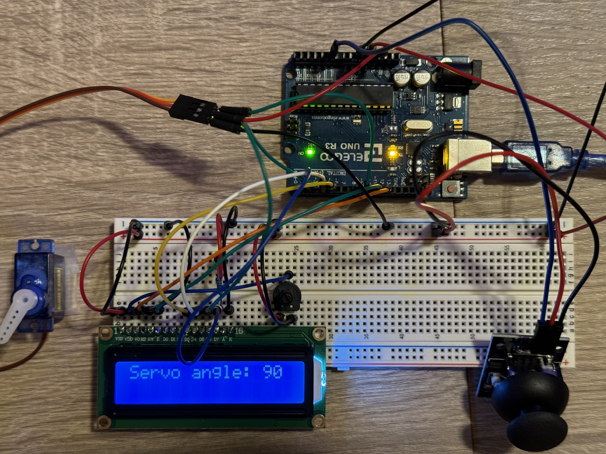
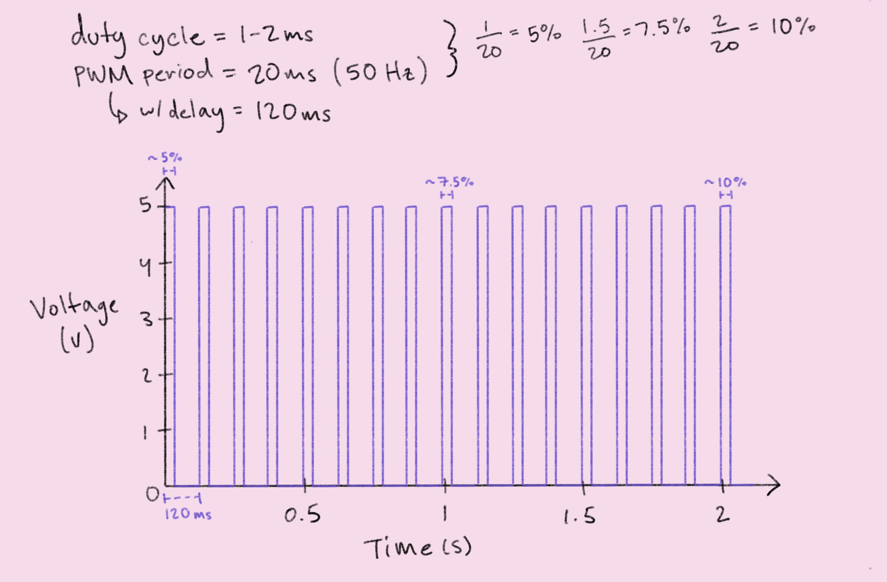

The circuit operates by reading the X-value of the joystick and converting it to a value between 0 and 180, which is used to control the angle of the servo. The angle of the servo is then written to the LCD.
The circuit schematic illustrates each of the connections from an LCD, servo, and joystick module to their respective Arduino pins. For simplicity, only pins that were used in the circuit are labelled. The LCD uses one 10kΩ potentiometer for adjusting backlight contrast and one 220Ω resistor for setting backlight brightness. These resistance values are typical for the part, according to its datasheet specs. Although the datasheet for the servo specifies a voltage of 4.8 to 6V, it is connected to the 3.3V pin on the Arduino to reduce overall current draw (from a single pin). I observationally confirmed that the servo could operate sufficiently at the lower voltage.
The circuit is divided into three components: the LCD, servo, and joystick. The servo requires a PWM pin to control its angle of rotation, thus it is connected to digital/PWM pin 9. Meanwhile, the joystick needs an analog pin to read its horizontal (X) position, and therefore it is connected to analog pin A0. For the LCD circuit, I followed this tutorial from Circuit Basics.

#include // LiquidCrystal library
#include // Servo library
const int sensorPin = A0; // pin that reads the horizontal (X) position of the joystick
const int servoPin = 9; // pin that sends pulse signal to the servo motor
const int rs = 12, en = 11, d4 = 5, d5 = 4, d6 = 3, d7 = 2; // numbers of the Arduino pins connected to the LCD
int sensorVal = 0; // the joystick sensor value
int sensorMin = 1023; // minimum sensor value (10-bit analog-to-digital convertor)
int sensorMax = 0; // maximum sensor value
LiquidCrystal lcd(rs, en, d4, d5, d6, d7); // define the LiquidCrystal variable using 4 data lines
Servo myServo; // create the Servo variable
void setup() {
// initialize the joystick sensor pin as an input
pinMode(sensorPin, INPUT);
// initialize the LCD with 16 columns and 2 rows
lcd.begin(16, 2);
// attach the servo variable to its pin
myServo.attach(servoPin);
// move the servo to a starting position of 90 degrees
myServo.write(90);
// initialize digital pin 13 with built-in LED as an output
pinMode(13, OUTPUT);
// turn on the LED to signal the start of the calibration period
digitalWrite(13, HIGH);
// calibrate during the first five seconds
while (millis() < 5000) {
// read the joystick sensor
sensorVal = analogRead(sensorPin);
// record the maximum sensor value
if (sensorVal > sensorMax) {
sensorMax = sensorVal;
}
// record the minimum sensor value
if (sensorVal < sensorMin) {
sensorMin = sensorVal;
}
}
// signal the end of the calibration period
digitalWrite(13, LOW);
}
void loop() {
// read the joystick sensor
sensorVal = analogRead(sensorPin);
// limit the sensor values to the calibrated range
sensorVal = constrain(sensorVal, sensorMin, sensorMax);
// apply the calibration to the sensor reading
sensorVal = map(sensorVal, sensorMin, sensorMax, 0, 180);
// move the servo to the calibrated sensor value
myServo.write(sensorVal);
// print the servo angle to the LCD
lcd.print("servo angle: ");
lcd.print(sensorVal);
// delay for 5 milliseconds to stabilize readings
delay(5);
// clear the LCD screen for the next reading
lcd.clear();
}
The circuit operates by reading the X-value of the joystick and converting it to a value between 0 and 180, which is used to control the angle of the servo. The angle of the servo is then written to the LCD.
1. The data sheet for the servo says that it has a PWM period of 20ms (50Hz) and a duty cycle that ranges from 1-2ms depending on the servo's position (1ms at 0 degrees, 1.5ms at 90 degrees, and 2ms at 180 degrees). This means that the Arduino delivers ~5V to the servo 5-10% of the time and 0V the rest of the time. Using this information, I graphed the voltage at pin 9 over time in seconds, for two seconds. Because the given code included a 100ms delay between each iteration of the for-loop, I also added 100ms to the PWM period.
Note: Not to scale.
2. To address an erroneous reading occurring 1% of the time, I would include code to calibrate my sensor readings to an acceptable range. This could look like:
const int sensorPin = A0; // the sensor pin
int sensorVal = 0; // the sensor value
int sensorMin = 1023; // minimum sensor value (10-bit analog-to-digital convertor)
int sensorMax = 0; // maximum sensor value
void setup() {
// initialize digital pin 13 with built-in LED as an output
pinMode(13, OUTPUT);
// turn on the LED to signal the start of the calibration period
digitalWrite(13, HIGH);
// calibrate during the first five seconds
while (millis() < 5000) {
// read the sensor
sensorVal = analogRead(sensorPin);
// record the maximum sensor value
if (sensorVal > sensorMax) {
sensorMax = sensorVal;
}
// record the minimum sensor value
if (sensorVal < sensorMin) {
sensorMin = sensorVal;
}
}
// signal the end of the calibration period
digitalWrite(13, LOW);
}
void loop() {
// read the joystick sensor
sensorVal = analogRead(sensorPin);
// limit the sensor values to the calibrated range
sensorVal = constrain(sensorVal, sensorMin, sensorMax);
}
3. To address noisy readings that randomly deviate from the true measurement (up or down) from 10%, I would include code to smooth the data collected. This could look like:
const int sensorPin = A0; // the sensor pin
const int numReadings = 10; // number of samples to keep track of
int readings[numReadings]; // readings from the sensor pin
int readIndex = 0; // index of the current reading
int total = 0; // running total
int average = 0; // the average
void setup() {
// initialize all readings to 0
for (int i = 0; i < numReadings; i++) {
readings[i] = 0;
}
}
void loop() {
// subtract last reading
total = total - readings[readIndex];
// read from the sensor
readings[readIndex] = analogRead(inputPin);
// add the reading to the total
total = total + readings[readIndex];
// advance to the next position in the readings array
readIndex = readIndex +1;
// if end of array is reached, reset the readIndex
if (readIndex >= numReadings) {
readIndex = 0;
}
// calculate the average
average = total / numReadings;
}